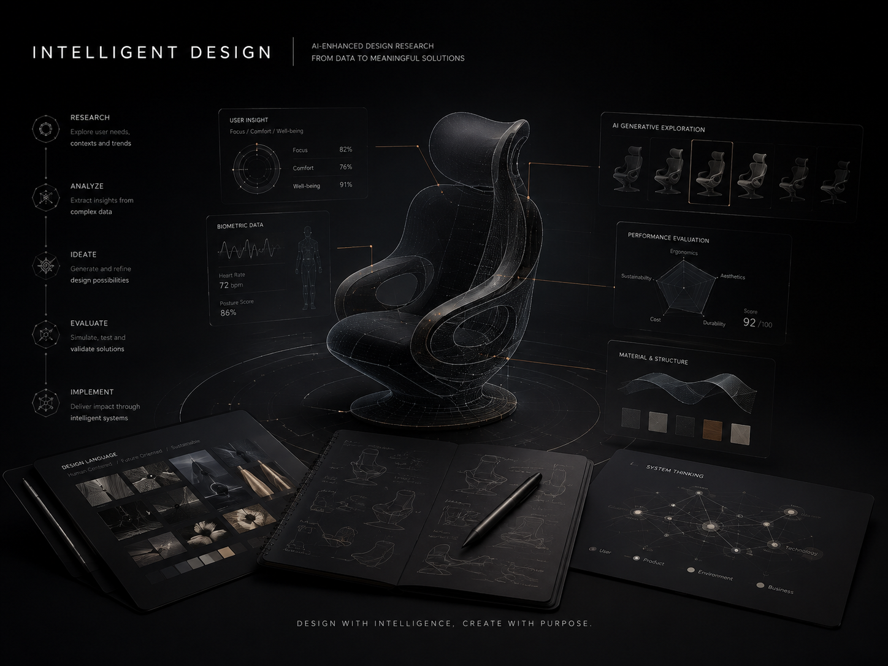

Learning · Creating · Designing
Code as Design
A personal portfolio system that is continuously built and iterated, used to record learning, design judgment, and project practice.


Design in the AI era
So much creativity waiting for us to seek.
View Projects →Site Direction
Focused on sharing ideas, with projects as support.
This site not only displays outcomes. It also records how I use AI collaboration, low-code management, and design evaluation to keep shaping a maintainable portfolio system.
Course Notes
Selected learning records, kept compact for browsing.
Course notes and design observations from research, events, and reflection.
Technology Notes
Website building, deployment, local tools, and repeatable maintenance workflows.

Lessons About AgentsOrganizing agent practice into methods, constraints, and reusable judgment.
Book Notes
Readable fragments from books, references, and long-term learning material.